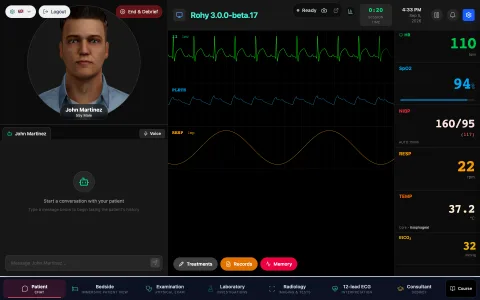
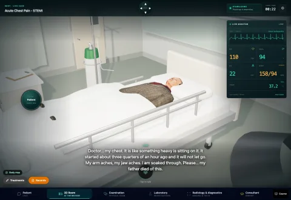
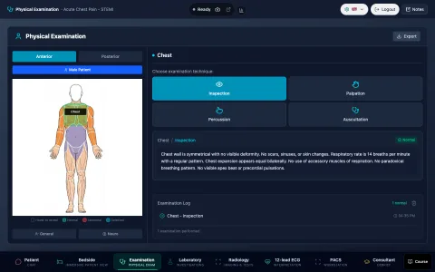
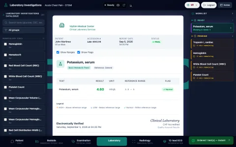
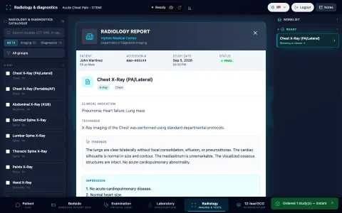
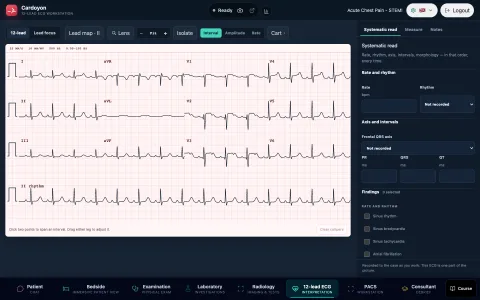
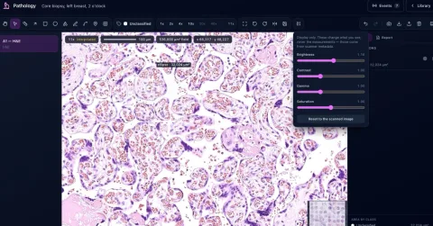
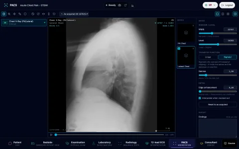
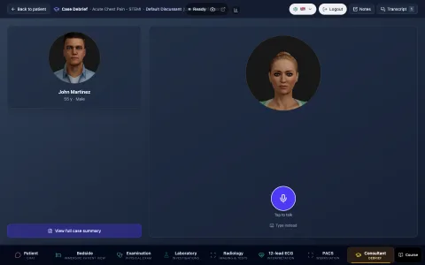

An AI clinical simulation environment for clinical reasoning research.
Rohy combines a conversational virtual patient, a live physiological monitor, structured examination, laboratory and imaging workflows, a DICOM reading room, whole-slide pathology, a 12-lead ECG workstation, treatments with time-dependent effects, a multi-agent care team, a post-case debrief, and process-oriented learning analytics in one environment. Every learner action is recorded in sequence, stamped with the room it happened in and the vital signs at that moment.
![The Patient room in Rohy 3.0.0-beta.17. Left: the 3D avatar of John Martinez, 55, male, above an empty transcript reading 'Start a conversation with your patient' and a message box. Right: the live monitor with lead II ECG, plethysmograph and respiration traces, heart rate 110, SpO2 94%, NIBP 160/95, respiratory rate 22, temperature 37.2 °C and EtCO2 32, with Treatments, Records and Memory buttons under the traces. The header holds the Oyon capture pill, the session clock at 0:13, the date, alarms, settings and End & Debrief. The navigator along the bottom lists Patient, Bedside, Examination, Laboratory, Radiology, Consultant and Course.](assets/screenshots/patient-room.webp)
Rohy serves the CRETIC research programme and any simulation curriculum.
Rohy supports CRETIC: Optimizing Clinical Reasoning in Time-Critical Scenarios, a data-driven multimodal approach, a Research Council of Finland project that develops a gamified platform combining virtual patients and educational-escape-room elements to simulate clinical emergencies for healthcare students and trainees.
Every component on this page works in any simulation context. The CRETIC research agenda shaped the platform; the platform runs independently of it.
Project led by Sonsoles López-Pernas · School of Computing, University of Eastern Finland.
Each task has its own room inside one running case.
The encounter is organised into peer rooms: core rooms for the patient, examination, laboratory, radiology and debrief, and plugin rooms (Bedside, 12-lead ECG, Pathology, PACS) that appear when the case enables them. The case keeps running while the learner moves between them: laboratory results become ready, treatment effects continue, a paged consultant arrives. A count badge on the Laboratory and Radiology buttons reports ready reports while the learner works elsewhere. Every action is stamped with the room it happened in. Each room in detail → · How navigation works →

01 · PatientInterview, monitor, treatments
The patient answers by text or voice through an animated 3D avatar. The live monitor, the Treatments panel, the Records drawer and the End & Debrief action live here.
Patient room →
02 · BedsideThe same patient at the bedside
Rohy 3 adds a 3D bedside room. The patient lies in bed with the live monitor, a camera wheel, and an examination wheel. Conversation and findings are shared with the Patient room.
Bedside →
03 · ExaminationStructured physical examination
A body map with 67 named regions. Inspection, palpation, percussion and auscultation reveal the finding the case author wrote for that pair, with site-specific heart and lung sounds.
Examination room →
04 · LaboratoryCatalogue, orders, reports
Over 200 tests in more than 30 clinical groups. Orders move from pending to ready to viewed on a one-to-five-minute turnaround, and reports are laid out like hospital reports.
Laboratory →
05 · RadiologyImaging catalogue, orders, reports
74 orderable studies across nine modalities with the same pending, ready and viewed lifecycle as the laboratory, and a per-case report authored by the educator.
Radiology →
06 · 12-lead ECG · pluginA reading workstation with calipers
Calibrated paper, selectable gain and sweep speed, diagnostic and monitor filters, interval, amplitude and rate calipers whose measurements are retained, and a lead map.
ECG workstation →
07 · Pathology · pluginWhole-slide imaging with measurement
Whole-slide navigation, a magnification ladder, a scale bar in micrometres, and annotation tools that report area. Display adjustments and measurements are kept separate.
Pathology →
08 · PACS · pluginThe DICOM reading room
Multi-series studies, a thumbnail rail, side-by-side viewports, and window width and level controls. Display processing is labelled as such and leaves the pixel values untouched.
PACS →
09 · ConsultantThe consultant answers during the case and leads the debrief
A separate discussant persona with its own voice, avatar and model receives the learner's encounter record and leads a Socratic debrief once End & Debrief stops the case.
Consultant and debrief →A care team of AI agents, each with its own knowledge.
A clinical encounter involves several people. In Rohy the learner addresses the patient, the patient's family when the patient is unable to give a history, the bedside nurse who holds the medication record and the recent vitals, and the on-call consultant who is paged for a second opinion. Each is a distinct AI agent with its own persona, voice, knowledge scope, language model and arrival cue, and all of them speak in one session transcript.
- Patient. Answers from the case's own history and personality, in lay language, within what a patient at this stage of the encounter would know. A 3D avatar lip-syncs the spoken reply, blinks, and holds eye contact using the learner's face position when Oyon is enabled.
- Family or surrogate. Carries the collateral history for the unconscious, intoxicated, paediatric, post-arrest, aphasic or confused patient. Knows the home medications and what happened on the way in; the laboratory results are outside its scope.
- Bedside nurse. Holds the running medication record, the most recent set of vitals, and what was tried in the last few minutes.
- On-call consultant. Paged by the learner and arrives after a server-anchored interval of one to three minutes, so waiting, reassessment and interim management stay part of the encounter. Brings the broader differential.
- Debrief discussant. A senior clinician-educator persona, separate from the patient, that leads the post-case reflection.
- Knowledge scope is set per agent, per case. The patient is unaware of the consultant's notes, the family is unaware of the labs, and the nurse is unaware of the discharge plan. The information asymmetry is what makes the interview realistic.
- Per-persona model routing. Patient, discussant and agents each route through their own configured language-model settings. Local backends through LM Studio and Ollama are supported alongside Anthropic, OpenAI and Google.
- Affect-aware patient (optional, off by default). When an administrator enables affect routing, the patient is told each turn how the learner currently appears from consent-gated Oyon capture and reacts in character. Raw camera data stays in the browser.
Physiology that changes over time, and responds to treatment.
Cases evolve through changes in vital signs, rhythm and clinical state. A time-keyframed scenario engine moves the patient toward deterioration or recovery, treatment effects layer on top with onset, peak and duration, and alarms fire when a vital crosses its threshold. This temporal model is what makes the central loop of clinical reasoning possible: give a treatment, observe the response, judge whether it is adequate, revise the plan.
- Six monitored channels. Heart rate, SpO₂, non-invasive blood pressure, respiratory rate, temperature and end-tidal CO₂, with admin-editable display ranges and alarm thresholds.
- Real-time ECG synthesis. Sum-of-Gaussians waveform generation renders morphologically correct PQRST complexes at any heart rate. Rhythms include normal sinus, atrial fibrillation, ventricular tachycardia, ventricular fibrillation and asystole. Modifiers add ST elevation or depression, electrolyte derangements, pericarditis, bundle branch block, premature ventricular complexes and signal noise. The plethysmograph is synchronised to the heart rate.
- A treatment engine with 33 default treatments. Medications with dose, route and frequency; intravenous fluids at a rate; oxygen by nasal cannula, simple mask or non-rebreather; positioning and nursing measures. Each carries onset, peak and duration, and its effect moves the vitals over the following minutes. Contraindicated and high-alert orders raise warnings. Ordering and administering are two separate steps.
- Alarms that latch. Alarms route to banner, toast, audio and the audit log through one central dispatcher. Acknowledging or snoozing silences the notification and is timestamped; the physiology stays abnormal until it is treated or the scenario changes. Acknowledgement state is kept per case.
- Session snapshots. The case configuration is frozen when a session starts. Authoring edits made during a running session apply to future sessions only.
- Instructor overrides persist. A pinned vital or rhythm survives engine ticks until it is released.
Learner behaviour as sequences and transition networks.
Every navigation, examination, order, treatment, message, monitor interaction and alarm response is recorded as a verb-typed event from a controlled vocabulary of over 130 verbs. Each row is stamped with the active room, the contemporary vital signs, and the Oyon affect window at the moment of the action. A session is therefore an ordered sequence, and a cohort is a set of sequences.
Rohy analyses those sequences with Transition Network Analysis, which keeps the order of actions, the transitions between them, and their recurrent patterns as the analytic object. The dashboard runs against the live session.
- Clustering. Learners are grouped by how their sessions unfold, using sequence similarity and hierarchical methods. The silhouette score is reported so cluster separation can be judged.
- Transition networks. Directed weighted graphs with edge probabilities and centralities, one per cluster and per session, so behavioural archetypes can be compared side by side.
- State distributions and temporal plots. Per-cluster histograms and stacked proportion plots show how the mix of communicating, examining, investigating, treating and regulating evolves across the timesteps of a case.
- Course-aware views. Course filters, student activity frequencies, timeline and hourly views, and case and session drill-downs.
- Export. Login logs, chat logs, complete session bundles and questionnaire responses in CSV or JSON.
![The Analytics dashboard, Clusters tab, with course, case, student and date filters, source Activity, mapping Clinical state, all rooms, grouped per session. Tiles read 45 sequences, 6,495 events, 10 states, density 49.0%, 49 edges. A line reads '3 clusters found, silhouette score 0.908 (cluster good)'. Three cluster cards: Cluster 1, 3 sessions (7%), average sequence length 1035.7, led by assessing with 2,901 events; Cluster 2, 1 session (2%), average length 1993.0, led by monitoring with 974; Cluster 3, 41 sessions (91%), average length 34.0, led by navigating with 580 and regulating with 453. Under each, a circular transition network with labelled edge probabilities.](assets/screenshots/analytics-clusters.webp)
Affect and attention, measured in the browser and stored as aggregates.
Oyon is an optional component, off by default and consent-gated, for affective and attentional measurement from the learner's webcam. Inference runs entirely in the browser with the MediaPipe face landmarker and ONNX Runtime Web. Three multi-task models trained on AffectNet produce an eight-emotion classification and valence and arousal regression. The same stream yields gaze, head pose, facial action units, body posture, and a remote-photoplethysmographic heart-rate estimate. Measurements are aggregated into ten-second windows before they are persisted, the server validator accepts aggregates only, and visibility permissions are stored with each record at write time. The affect stream shares the session, the time base and the active room with the action stream, so behavioural and affective trajectories are analysed together.
![Live Oyon signal panel. Left: an eight-emotion bar chart with Neutral at 83% confidence, Sad 8%, Anger 7%, Surprise 2%; live gaze coordinates with quality 1.00 over 901 samples; an eye module reading with openness 0.80, zone centre. Right: a recent-weighted gaze heat map on a dark screen-shaped canvas labelled 'in-tab only, not stored, not sent'. Below: heart rate and breathing at 76 bpm with signal quality 83% and SNR 8.5, marked partial and integrated over 12 seconds; head pose with yaw +4.9°, pitch −9.4°, roll +4.2° and action-unit bars for eye squint, mouth press, brow furrow, brow raise and smile; body posture with tilt +12.5°, proximity 0.373 and upper-body visibility 60%.](assets/oyon-signals.jpg)
![The Oyon dashboard, Affect tab, for session 483 with 446 windows. Tiles read 446 windows, dominant 6/8, links 15; model channels 7, latest state Insufficient, latest quality 100%. An 8-emotion co-occurrence map with weighted arcs between neutral, anger, contempt, disgust, fear, sad, happy and surprise. An emotion heat strip over the timeline with totals: Anger 70 (15.7%), Contempt 0, Disgust 22 (4.9%), Fear 0, Happy 16 (3.6%), Neutral 317 (71.1%), Sad 2 (0.4%), Surprise 4 (0.9%). Below, an affect plane of windows across arousal and valence and an arousal–valence mix: positive-active 61 (13.7%), positive-calm 24 (5.4%).](assets/screenshots/oyon-dashboard.webp)

These signals index observable behaviour. Their relationship to internal psychological states remains an open empirical question, and their value lies in adding an observational layer that can support research on attention, behaviour and interaction when used with appropriate methodological caution.
Cases are authored, versioned and bound to a language.
The case wizard covers patient persona, demographics, physiological state, scenario progression, alarms, agents, treatments, laboratory findings, imaging, physical-examination findings, clinical records and patient documents. The shipped repository includes septic shock, ST-elevation myocardial infarction, hypertensive crisis, respiratory failure, anaphylaxis, diabetic ketoacidosis, ischaemic stroke, pulmonary embolism, gastrointestinal bleeding, COPD exacerbation, severe hypoglycaemia, complete heart block, atrial fibrillation with rapid ventricular response, opioid overdose and acute decompensated heart failure.
- Case versions are retained and earlier versions can be restored, because a change to a case alters task difficulty, the evidence available and the timing of events.
- Language is a property of the case. English, German, Spanish, Italian, Finnish and Swedish. The setting drives the patient's voice, the clinical content and the language directive given to the model, and it is fixed once set.
- Courses and cohorts. Teacher-owned courses with join and registration codes, co-teachers, per-course case assignment, rosters, a completion grid, a live feed, lessons, surveys and course export. Enrolled students see the default case plus the cases assigned to their course.
- Registration governance. Open, closed, invite-only and administrator-approval modes, email-domain rules, revocable invitation links, and course auto-enrolment.
- Settings Control Center. A card-based landing for cases, scenarios, agents, avatars, voice, affect, users, courses, lessons, analytics, Oyon, logs and the body-map and laboratory libraries.
![Settings & Administration, Manage Cases. Tiles read 9 total cases, 9 available, 0 hidden. Under 'Basic course (4)': Acute Chest Pain – STEMI in English (EN-0001, default, available, 255 live), Akute Anaphylaxie nach Wespenstich in German (DE-0062), Cetoacidosis Diabetica – Diabetes Tipo 1 in Spanish (ES-0063) and Ictus Ischemico Acuto – Codice Ictus in Italian (IT-0064), each with a course selector and Hide, Set Default, Load, export, Edit, Duplicate and Delete controls. 'Unassigned cases (5)' begins with Septic Shock – Pneumonia. The sidebar lists Simulation, Overview, Cases, Scenarios, Agents, Avatars, Voice, Affect, Users, Courses, Lessons, Analytics, Oyon, Logs, Body Map, Lab Database and Medications.](assets/screenshots/settings-cases.webp)
Roles, tenancy, audit and deletion are part of the design.
A platform like this holds identifiable user information, detailed performance traces and potentially sensitive behavioural data. Collection, access, retention and deletion are treated as part of the research design.
- Roles. Guest, trainee, reviewer, educator and administrator, with permissions scaled accordingly. Educators author learning material; sensitive administrative functions stay restricted, and administrators are unable to edit or delete peer administrators through direct API calls.
- Tenant separation. Data, sessions, orders and staff access are bound to tenant and case. Session ownership is enforced on every read.
- Audit logging, retention and erasure. Soft deletion with a right-to-erasure purge, structured observability, and a diagnostics bundle for operators.
- Frozen visibility for affect data. Visibility permissions are stored with each Oyon record, so a later change in platform settings leaves already-collected observations under their original terms.
- Redaction and rate limiting. Centralised response redaction of sensitive configuration, and rate limits on login, registration and the general API.
Rohy runs on your own infrastructure and supports cloud providers.
The default install puts a local voice in the patient's mouth and routes inference through a local model server on the same host. Air-gapped installation is a documented operator path. Cloud language-model and text-to-speech providers can be added per tenant.
Multi-tenant, role-hierarchy aware, audit-logged, and instrumented with structured observability.
Install in the shape that fits the site.
Four install paths and two upgrade paths cover the deployment surface, from a single classroom laptop to an air-gapped institutional host. The operator tool handles in-place upgrades with a database snapshot and automatic rollback on failure. The release workflow boots the published image and runs the technical test suite against it before a tag is finalised.
Published Docker image
Multi-arch image, smoke-tested against the release tag before it ships. Migrations run automatically on first boot. The current tag is listed on the releases page.
Linux + systemd from source
Full production install. The bootstrap script wires up the service unit, nginx, certbot and the operator user.
Single machine
Personal devbox, classroom lab, demo box. Runs directly under your user account without systemd or nginx.
Air-gapped
A self-contained source tarball plus a Docker image tarball, both sha256-verified, with the Oyon model bundles included. A documented operator path for sites without internet.
Source / systemd
Snapshot the database, run the pre-flight, apply, verify with the smoke test and the technical test suite. Rollback is automatic on failure.
Docker
Bump the image tag. Migrations run on the new container's first boot; rollback is a pull of the previous tag.
Full operator manual: Install · Deploy · Updating · Migrations runbook